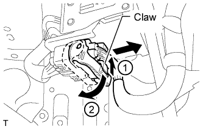
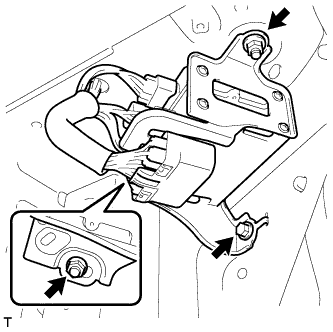
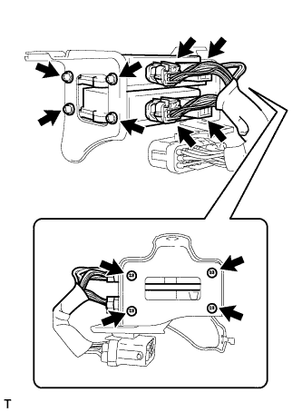

TURBO MOTOR DRIVER > REMOVAL |
| 1. DISCONNECT CABLE FROM NEGATIVE BATTERY TERMINAL |
Disconnect the cables from the negative (-) main battery and sub-battery terminals.
| 2. REMOVE FRONT FENDER SPLASH SHIELD SUB-ASSEMBLY RH |
Remove the 3 bolts and screw.
Loosen the clip and remove the splash shield.
| 3. REMOVE FRONT FENDER LINER RH |
Remove the screw and disconnect the liner from the front bumper cover.
Using a T30 "TORX" socket, remove the 3 screws.
Remove the 5 clips.
| 4. REMOVE TURBO MOTOR DRIVER |
 |
Disconnect the connector.
Disconnect the connector as follows: (1) push the claw upward, and (2) move the lock lever to release the lock.
 |
Remove 2 nuts, bolt and turbo motor driver.
 |
Disconnect the 4 connectors from the turbo motor driver.
Remove the 8 screws and 2 turbo motor drivers from the brackets.